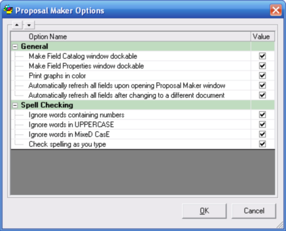

|
Proposal Maker Options (Proposal Maker Tools Menu) Proposal Maker Main Topics (List) Proposal Maker Menus (List) |
  
|
Proposal Maker Options (Proposal Maker Tools Menu)
Proposal Maker Main Topics (List) Proposal Maker Menus (List)
|
Proposal Maker Options (Proposal Maker Tools Menu) Proposal Maker Main Topics (List) Proposal Maker Menus (List) |
|
Icon: Keyboard Shortcut: Alt, M, O
Opens the Proposal Maker Options dialog, pictured below, which lets you set options that apply to Proposal Maker in general, and not to any particular document or project.

General
Make Field Catalog window dockable: When checked, makes it so the Field Catalog window can attach itself to the main Proposal Maker window, on the left-hand side by default. You may find that locating the window like that is more convenient for you.
Make Field Properties window dockable: Same as the previous option, but applies to the Field Properties window.
Print Graphs in color: When checked, makes it so the picture fields that consist of charts or graphs have their shapes drawn in different colors for printing with a color printer. When unchecked, the shapes on the graphs will be generated with various black and white patterns.
Automatically refresh all fields upon opening Proposal Maker window: When checked, makes it so when you open the Proposal Maker window, all the fields on the current document are refreshed so that they have the most recent data from the project.
Automatically refresh all fields upon changing to a different document: When checked, makes it so whenever you change to a different document, all the fields on each document you go to are refreshed so that they have the most recent data from the project.
Spell Checking
Ignore words containing numbers: Makes the spell checker not report a spelling error on any words that contain a number.
Ignore words in UPPERCASE: Makes the spell checker not report a spelling error on any words that use all capital letters.
Ignore words in MixeD CasE: Makes the spell checker not report a spelling error on any words that have a capital letter after a lowercase one.
Check spelling as you type: Draws a wavy, red line under a misspelled word immediately after you finish typing it and enter a space. The wavy, red underline will not stay permanently though. It will be erased once the document redraws itself.
OK Button: Applies your changes and closes this dialog.
Cancel Button: Closes this dialog without making any changes.